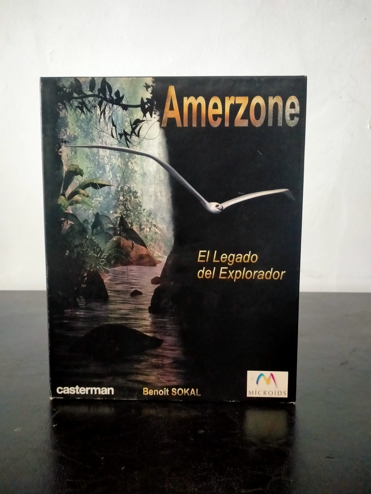

Ficha #000000
Amerzone: El legado del explorador
Amerzone: El legado del explorador (1999) es una aventura gráfica point & click creada por Benoît Sokal, reconocido autor de cómic europeo, que trasladó su sensibilidad artística al mundo del videojuego. La obra propone un viaje introspectivo y pausado hacia Amerzone, una región ficticia inspirada en ecosistemas tropicales, cargada de misterio y simbolismo. El jugador encarna a un periodista que recibe la misión de completar la última voluntad de un explorador moribundo: devolver un huevo de las legendarias aves blancas a su hábitat natural. A partir de ahí, se inicia un recorrido lleno de paisajes exóticos, máquinas extrañas y una narrativa profundamente ambiental. A nivel jugable, Amerzone se apoya en mecánicas clásicas del género, con exploración en primera persona, resolución de puzles y una fuerte carga narrativa. Destaca especialmente por su dirección artística, heredera directa del estilo de Sokal, y por su atmósfera melancólica, donde la naturaleza y la decadencia humana se entrelazan. Esta edición Big Box representa una de las grandes apuestas europeas por la aventura gráfica a finales de los 90, y es especialmente valorada por coleccionistas debido a su estética cuidada y su relevancia dentro del catálogo de Microïds, sirviendo además como precursor espiritual de la posterior saga Syberia.
- Formato
- Big Box
- Plataforma
- Win95 Win98
- Género
- Aventura gráfica Point and click Exploración
- Serie
- Big Box Todos
- Desarrollador
- Microïds
- Distribuidor
- Microïds, Casterman
- EAN
- —
Contenido de la edición
- Caja Big Box original
- CD-ROM del juego
- Manual de instrucciones
Preservación
- Protección
- Sin protección
- Formato recomendado
- ISO
- Jugable en virtualización
- Sí
No requiere protección activa más allá del CD. Preservable mediante imagen ISO estándar.